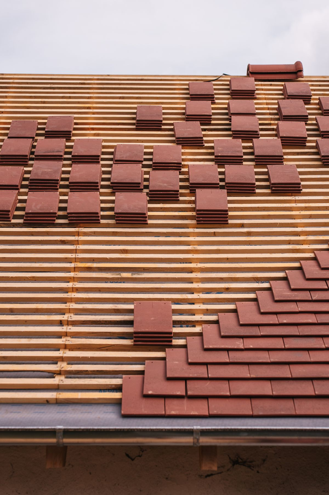

Профнастил, металлочерепица или мягкая кровля
Какое кровельное покрытие выбрать для дома, бани или гаража.

Профнастил — самый дешёвый вариант. Кровельный профлист с высотой волны 20–35 мм укладывают на уклон от 8°. Подходит для хозяйственных построек, гаражей и бань, но выглядит проще металлочерепицы. Требования к профилю — ГОСТ 24045-2016.
Металлочерепица дороже профнастила на 20–30 % и выглядит как черепица. Минимальный уклон 14°, срок службы 30–50 лет.
Мягкая (гибкая битумная) черепица подходит для крыш сложной формы — башенок, куполов — и почти не даёт отходов. Укладывается на сплошное основание из OSB или фанеры, поэтому итоговая стоимость выше. Не шумит при дожде. Уклон от 12°.
Керамическая черепица — самый долговечный (более 100 лет) и дорогой вариант. Масса 40–60 кг/м² требует усиленной стропильной системы. Уклон от 22°.
Для плоских крыш ни один из этих материалов не подходит — там применяют рулонную наплавляемую гидроизоляцию или мембраны.
Главное за минуту
- Профнастил — самый дешёвый вариант.
- Металлочерепица дороже профнастила на 20–30 % и выглядит как черепица.
- Мягкая (гибкая битумная) черепица подходит для крыш сложной формы — башенок, куполов — и почти не даёт отходов.

Проверить перед работой
- Проверьте проектный состав кровли и назначение каждой плёнки.
- Герметично выполните внутренние примыкания и проходки.
- Сохраните предусмотренные вентиляционные зазоры и путь выхода воздуха.
Частые ошибки
- Поменять местами пароизоляцию и диффузионную мембрану.
- Перекрыть выход воздуха утеплителем или отделкой.
Видео по теме
- Теплоизоляция крыши: каменная вата и PIR · ТЕХНОНИКОЛЬ
Источники и изображения
Монтаж керамической кровельной черепицы · Clément Proust · Источник изображения · Pexels License